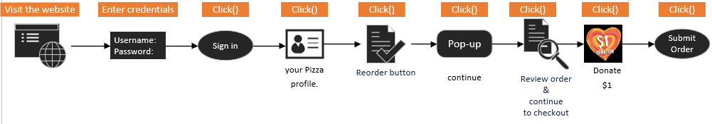
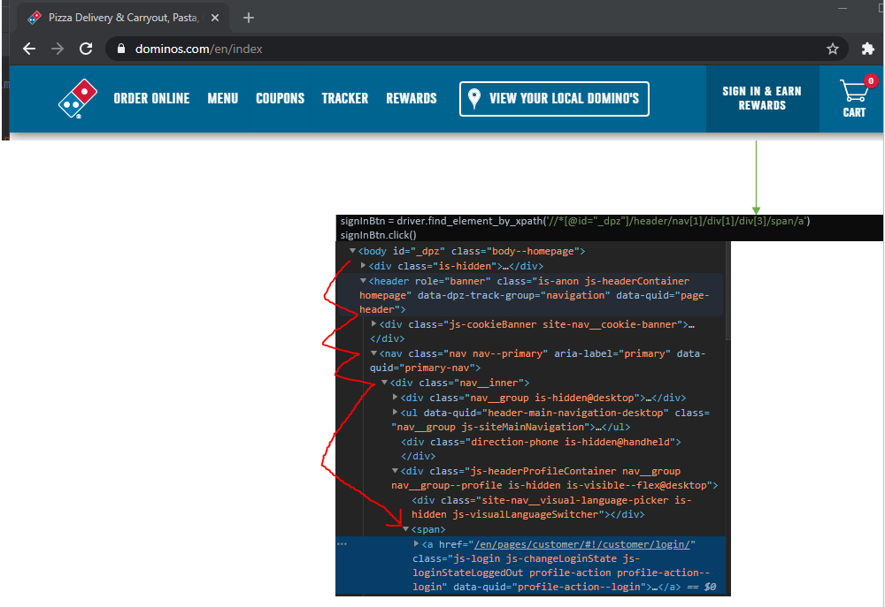

Automating with Python
Automating The Ordering Pizza Process
Although I love pizza and I order it at least twice a week, this task sure gets tiresome when I have to repeat the same process every single time I order pizza. I have to visit Dominos, login, select a pizza from my profile, click continue, review my order, select an amount to donate to St. Jude Children’s Hospital, and submit the order.
Using Python and Selenium has made this task much easier by just running a script that will order my favorite pizza without me having to interact with the whole process of ordering.
Technologies used
- Python 3.8.5
- PyCharm Version: 2020.2.2
- Crome WebDriver 85.0.4183.87
Process
- Visit Dominos
- Enter credentials
- Click the sign in button
- Click on “Pizza Profile”
- Click on “Reorder Now”
- Click the continue Button on the pop-up window
- Click the continue to checkout button
- Click Yes, Add to Order $1 to St. Jude Children’s Research pop-up window
- Place order
- Close session
Requirements
Setup a Python environment to install Selenium with the following command:
pip install seleniumInstall the Chrome WebDriver for automation from Chromium and import the packages into the Python project:
from selenium import webdriver
from selenium.webdriver.common.keys import Keys
import timeThe imported packages will allow us to use the methods for the program to interact with the browser. Here is list of the methods we will be using:
- webdriver.Chrome() - Visits the website
- driver.find_element_by_xpath() - Locates an element
- driver.find_element_by_id() - Locates an element
- send_keys() - writes the input
- click() - Mocks the click of a mouse
- sleep() - Waits at a specified time before moving to another tasks
- refresh() - Refreshes the current web page
- clear() - Clears a text box
- driver.close() - Closes the automation
Steps
from selenium import webdriver
from selenium.webdriver.common.keys import Keys
import time
driver = webdriver.Chrome(executable_path= "C:\Drivers\chromedriver_win32\chromedriver")
driver.get('https://www.dominos.com/')
time.sleep(3)
# Refresh site to handle the pop up
driver.refresh()
time.sleep(3)
# Click the sign in button
signInBtn = driver.find_element_by_xpath('//*[@id="_dpz"]/header/nav[1]/div[1]/div[3]/span/a')
signInBtn.click()
time.sleep(3)
###################### Enter Credentials ###########################
# Enter email
jobLocation = driver.find_element_by_xpath('//*[@id="Email"]')
jobLocation.send_keys('email')
# enter password
psw = driver.find_element_by_xpath('//*[@id="Password"]')
psw.send_keys('password')
time.sleep(1)
####################################################################
# Login
loginBtn = driver.find_element_by_xpath('//*[@id="pizzaProfileLoginOverlay"]/form/div[3]/div/div[1]/div[2]/div[1]/div[1]/button/span')
loginBtn.click()
time.sleep(3)
# Navigate through the banner before clicking the pizza profile button
findBannerArielClassNav_Inner = driver.find_element_by_xpath('//*[@id="_dpz"]/header/nav[1]/div[1]/ul')
# Once we have arrived at the element 'a' from the dropdown list, click the button
pizzaProfileBtn = driver.find_element_by_xpath('//*[@id="_dpz"]/header/nav[1]/div[1]/ul/li[7]/a')
pizzaProfileBtn.click()
time.sleep(8)
# Assuming we have a pizza profile, click the reorder button
reorderBtn = driver.find_element_by_xpath('//*[@id="js-customerPage"]/div/section[3]/div/section/div/div[1]/div[1]/a')
reorderBtn.click()
time.sleep(7)
# click continue on the pop up window
continueToSelectionBtn = driver.find_element_by_xpath('//*[@id="genericOverlay"]/section/div/div/a[2]')
continueToSelectionBtn.click()
time.sleep(6)
# find the Continue to Checkout button
findCheckoutClass = driver.find_element_by_xpath('//*[@id="_dpz"]')
# click the Checkout button
checkoutBtn = driver.find_element_by_xpath('//*[@id="js-checkoutColumns"]/aside/div[3]/div[1]/a')
time.sleep(3)
checkoutBtn.click()
time.sleep(6)
# Donate $1 to St. Jude Children's Hospital in the pop up window
submitDonationBtn = driver.find_element_by_xpath('//*[@id="genericOverlay"]/section/div/div/div[2]/div/div[4]/a[1]')
submitDonationBtn.click()
# Place order
placeOrderBtn = driver.find_element_by_xpath('//*[@id="orderPaymentPage"]/form/div[5]/div/div/div[4]/button')
placeOrderBtn.click()
driver.close()
Summary
This task was very simple to automate but were some challenges. When copying an XML path and clicking a button, it would not work sometimes. This is because I had to navigate the web driver until it arrived at the proper element. For example, the Sign In button, I needed to find the dropdown menu by its id-->find the list-->and find the item to click.
Also, after running the script about 10 times in a row, sometimes a pop-up window would appear as soon as the Webdriver accessed the Dominos website. To handle the random pop-up window, I just refreshed the website.
Overall, this project was fun! Automating my pizza order has really opened my eyes on how useful automation can be to just about any industry, not just to help them order pizza but to also automate repetitive tasks in an organization that will help them be more efficient and productive.
Home